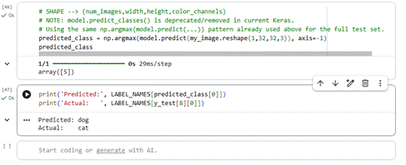

Unit 9 — Convolutional Neural Networks
Reading Wall's (2019) BBC article on facial-recognition bias alongside a hands-on CNN notebook made the connection between a model's accuracy metric and who actually absorbs its errors.
Running the CNN notebook
The task asks to change plt.imshow(x_test[16]) to a different index between 1 and 15 and check whether the model still predicts correctly. Three cells in the final section need the same index changed consistently:
plt.imshow(x_test[8])
my_image = x_test[8]
LABEL_NAMES[y_test[8][0]] # ground-truth label for comparisonI chose index 8 as my example.
One fix was needed along the way: the notebook's original single-image prediction line, model.predict_classes(my_image.reshape(1,32,32,3)), calls a method that has been removed from current versions of Keras (predict_classes was deprecated and dropped). The notebook already shows the correct modern replacement earlier, when generating predictions for the whole test set (predictions = np.argmax(model.predict(x_test), axis=-1)); the same pattern needs to be applied to the single-image cell so it does not error out:
predicted_class = np.argmax(model.predict(my_image.reshape(1,32,32,3)), axis=-1)
LABEL_NAMES[predicted_class[0]]With that fix applied, running the cells with index 8 displays the chosen test image, runs it through the trained model, and prints the predicted class name next to the true class name so the two can be compared directly. For image 8 the model predicted dog while the actual label is cat, so it got this one wrong.

Because CIFAR-10 test images are only 32×32 pixels and this model is a relatively small two-layer CNN, it typically classifies clearer, more distinctive images (e.g. ships, automobiles) correctly more consistently than visually similar classes (e.g. cat vs. dog, or deer vs. horse), which is also where the confusion matrix in section 3.1 tends to show the most mistakes. The cat/dog error above is an example of exactly that.
What the pairing of article and notebook surfaced
In the notebook, a misclassification is visible immediately — you can point at the picture it got wrong. Wall's article is a reminder of what it means when "the picture it got wrong" is a photograph of a real person in a police database rather than a photo of a cat: facial recognition is the same family of technology as the object-recognition CNN here — a convolutional network mapping pixels to a class label — except the class is a named individual, often in a policing or security context where the cost of an error is severe and unevenly distributed across groups under-represented in the training data. Model accuracy, in that setting, is not only a technical metric to optimise.